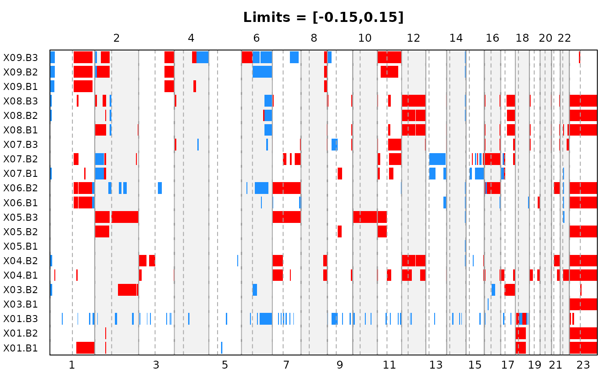
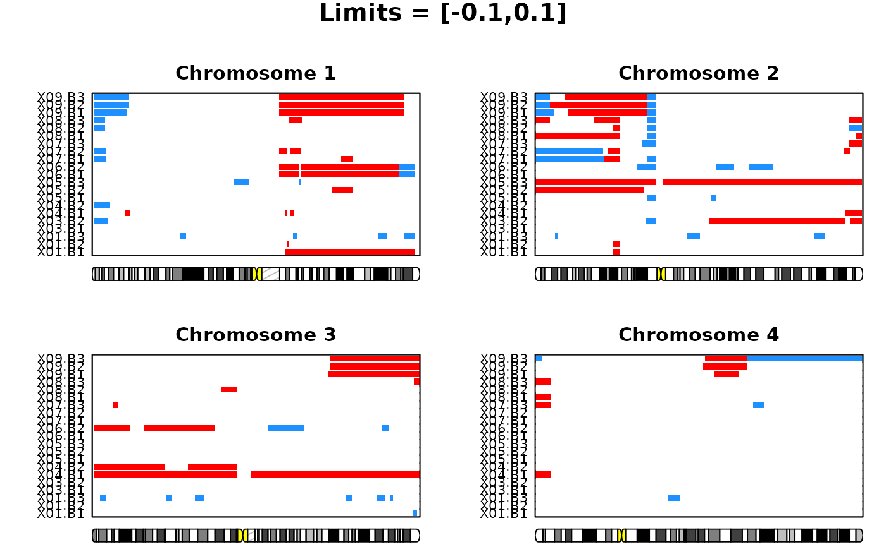

Create plots reflecting the location of aberrated segments. Results may be visualized over the entire genome or by chromosomes.
Usage
plotAberration(
segments,
thres.gain,
thres.loss = -thres.gain,
pos.unit = "bp",
chrom = NULL,
layout = c(1, 1),
...
)Arguments
- segments
a data frame containing the segmentation results found by either
pcformultipcf.- thres.gain
a numeric vector giving the threshold value(s) to be applied for calling gains.
- thres.loss
a numeric vector of same length as
thres.gaingiving the threshold value(s) to be applied for calling losses. Default is to use the negative value ofthres.gain.- pos.unit
the unit used to represent the probe positions. Allowed options are "mbp" (mega base pairs), "kbp" (kilo base pairs) or "bp" (base pairs). By default assumed to be "bp".
- chrom
a numeric or character vector with chromosome number(s) to indicate which chromosome(s) is (are) to be plotted. If unspecified the whole genome is plotted.
- layout
the vector of length two giving the number of rows and columns in the plot window. Default is
c(1,1).- ...
other optional graphical parameters. These include the plot arguments
xlab,ylab,main,cex.main,mgp,cex.lab,cex.axis,marandtitle(seeparon these), as well asplot.size,plot.unit,plot.ideo,ideo.frac,cyto.text,assemblyandcex.cytotext(seeplotSampleon these). In addition, a range of graphical arguments specific for this plot function may be specified:colorsa character vector of length two where the first and second element specifies the color used to represent loss and gain, respectively. Default is c("dodgerblue","red").
sample.labelsa logical value indicating whether sample labels are to be plotted along the y-axis. Default is TRUE.
sep.samplesa number in the range 0 to 0.4 used to create some space between samples. 0 implies that there is no space. Default is 2/nsample, where nsample is the number of samples found in
segments.sample.linea numeric scalar giving the margin line where the sample labels should be written, starting at 0 counting outwards. Default is 0.2.
sample.cexthe size of the sample labels.
Details
For each sample, the aberrated regions are shown in the color specified in
colors[1] (default dodgerblue) if the segment value is below
thres.loss and the color specified in colors[2] (default red)
if the segment value is above thres.gain. Non-aberrated regions are
shown in white. Each row in the plot represents a sample, while probe
positions are reflected along the x-axis.
Note
This function applies par(fig), and is therefore not compatible
with other setups for arranging multiple plots in one device such as
par(mfrow,mfcol).
Examples
#Load lymphoma data
data(lymphoma)
#Run pcf to obtain estimated copy number values
seg <- pcf(data=lymphoma,gamma=12)
#> pcf finished for chromosome arm 1p
#> pcf finished for chromosome arm 1q
#> pcf finished for chromosome arm 2p
#> pcf finished for chromosome arm 2q
#> pcf finished for chromosome arm 3p
#> pcf finished for chromosome arm 3q
#> pcf finished for chromosome arm 4p
#> pcf finished for chromosome arm 4q
#> pcf finished for chromosome arm 5p
#> pcf finished for chromosome arm 5q
#> pcf finished for chromosome arm 6p
#> pcf finished for chromosome arm 6q
#> pcf finished for chromosome arm 7p
#> pcf finished for chromosome arm 7q
#> pcf finished for chromosome arm 8p
#> pcf finished for chromosome arm 8q
#> pcf finished for chromosome arm 9p
#> pcf finished for chromosome arm 9q
#> pcf finished for chromosome arm 10p
#> pcf finished for chromosome arm 10q
#> pcf finished for chromosome arm 11p
#> pcf finished for chromosome arm 11q
#> pcf finished for chromosome arm 12p
#> pcf finished for chromosome arm 12q
#> pcf finished for chromosome arm 13q
#> pcf finished for chromosome arm 14q
#> pcf finished for chromosome arm 15q
#> pcf finished for chromosome arm 16p
#> pcf finished for chromosome arm 16q
#> pcf finished for chromosome arm 17p
#> pcf finished for chromosome arm 17q
#> pcf finished for chromosome arm 18p
#> pcf finished for chromosome arm 18q
#> pcf finished for chromosome arm 19p
#> pcf finished for chromosome arm 19q
#> pcf finished for chromosome arm 20p
#> pcf finished for chromosome arm 20q
#> pcf finished for chromosome arm 21q
#> pcf finished for chromosome arm 22q
#> pcf finished for chromosome arm 23p
#> pcf finished for chromosome arm 23q
#Plot aberrations for the entire genome
plotAberration(segments=seg,thres.gain=0.15)

#Plot aberrations for the first 4 chromosomes:
plotAberration(segments=seg,thres.gain=0.1,chrom=c(1:4),layout=c(2,2))
